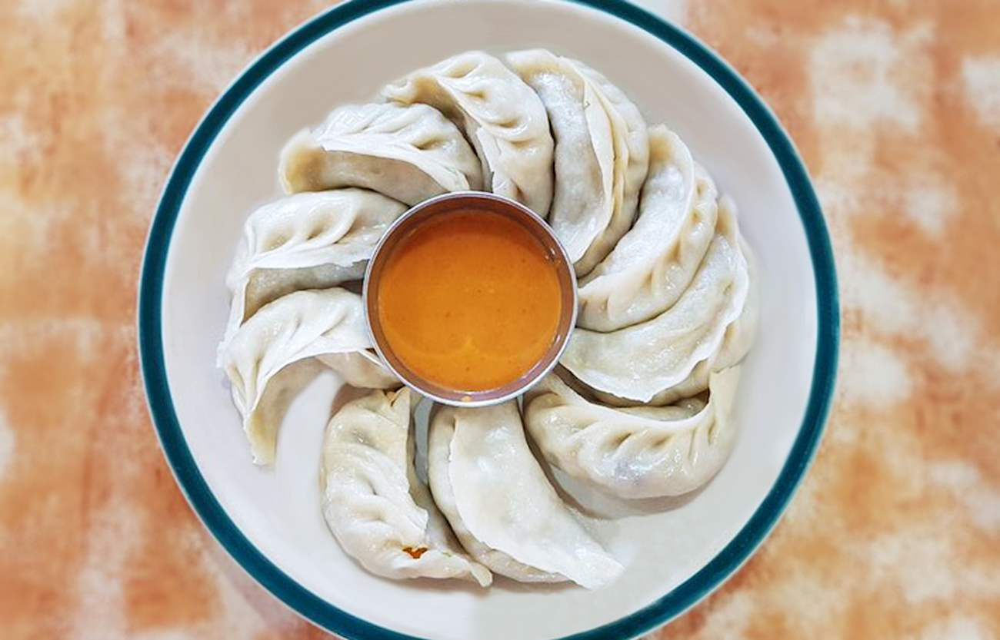

Momo Recipe

Momo is a dumpling made of all-purpose flour and filled with either meat or vegetables. Inspired by Tibetan dumplings, the dish is a very popular Nepali street food.
Ingredients:
- 500 gm of minced meat
- 1 grated onion
- Some finely chopped coriander
- 2 tablespoons of ginger and garlic paste each
- Half a tablespoon of coriander powder
- Half a tablespoon of turmeric
- Half a tablespoon of cumin powder
- 2 tablespoons of grated chilli
- 2 tablespoons of vegetable Oil
- 2 tablespoons of Salt
- 1 kg of flour
1. Prepare the fillings
- Add 1 grated oinion to the minced meat.
- Add half a tablespoon of turmeric powder. This is to add a bit of color.
- To enhance the flavor of the filling add 2 tablespoon of salt.
- Add 2 tablespoons of grated chilli. You can add a bit more if you want the momo to be spicy.
- Add 2 tablespoons of ginger and garlic paste each.
- Add half a tablespoon of coriander powder to make the filling taste a bit sour.
- Mix the spices with the meat.
- Add 2 tablespoons of vegetable oil and mix it again. The oil prevents the filling from getting too dry.
- Add finely chopped coriander.
- Mix them well.
Now onto the wrappers.
2. Making the momo wrappers
- Put the flour into a bowl
- Add water a little at a time to the flour to make dough.
- Knea the dough for a few more minutes. This makes the dough easier to use.
- Pinch off a bit of the dough (the amount depends on how big you want the wrapping to be)
- With a rolling pin roll the dough as thin as possible into ciruclar shapes (don't make them too thin or too thick)
3. Cooking the momos
Now comes the most difficult part: packing and cooking the momo!
- Put around one tablespoon of the filing into the centre of the wrapping.
- Pinch one edge of the wrapping to the other edge then twist it.
- Keep doing this until the filing is covered (make sure the wrapping fully covers the filling otherwise the momo may break when steamed)
- Oil the bottom of the steamer. This prevents the momo from sticking.
- Put the momo in a systematic order so that they don't touch each other.
- Steam for 20 - 30 minutes.